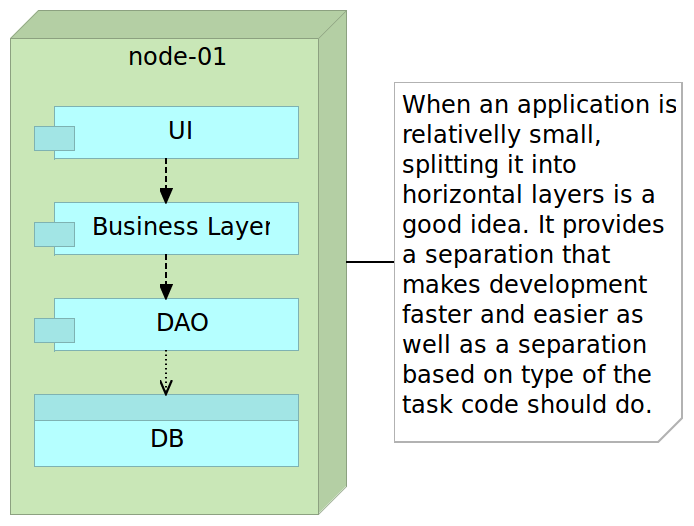
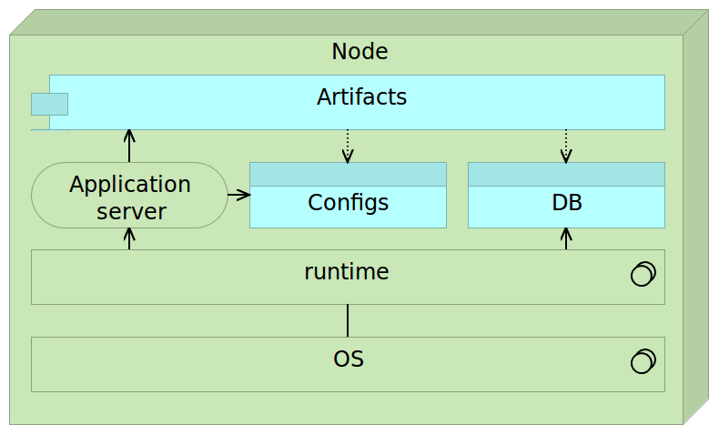
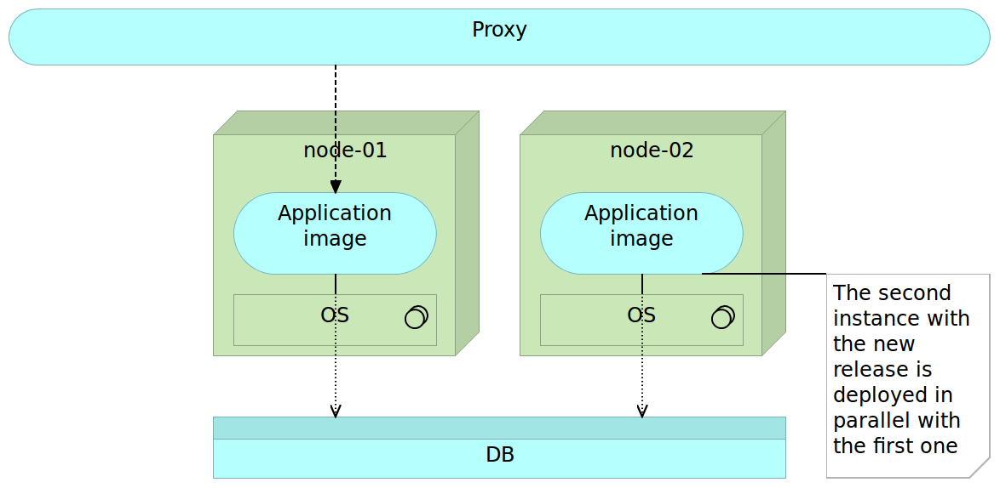
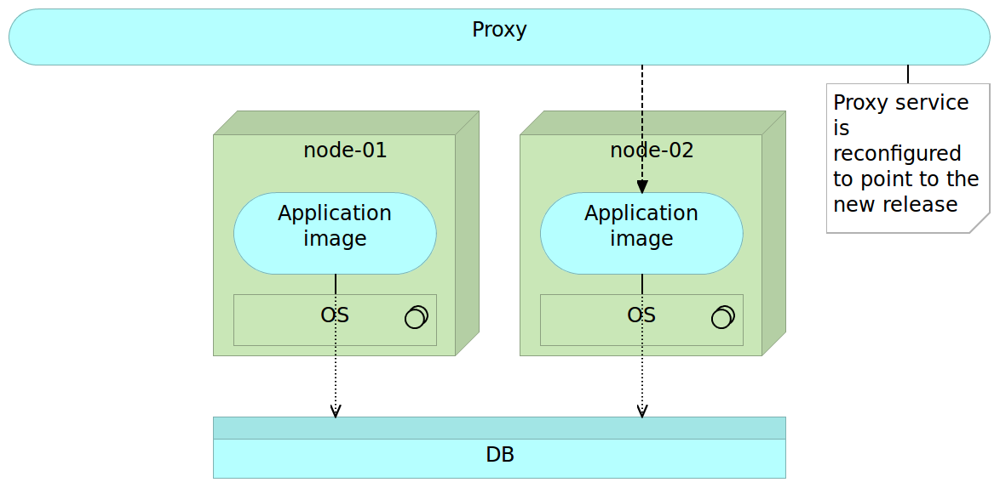
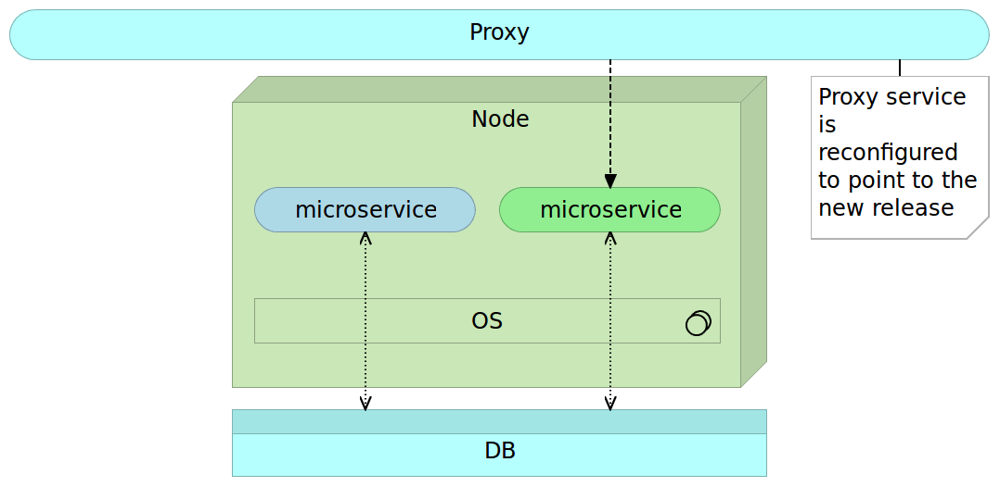
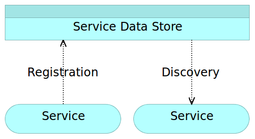
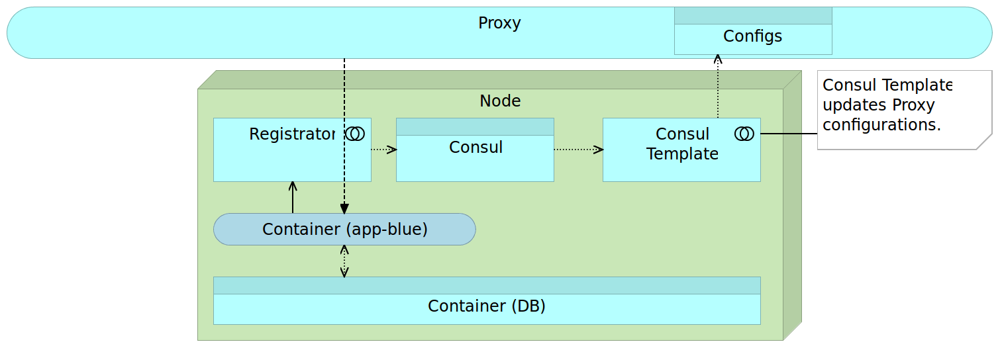
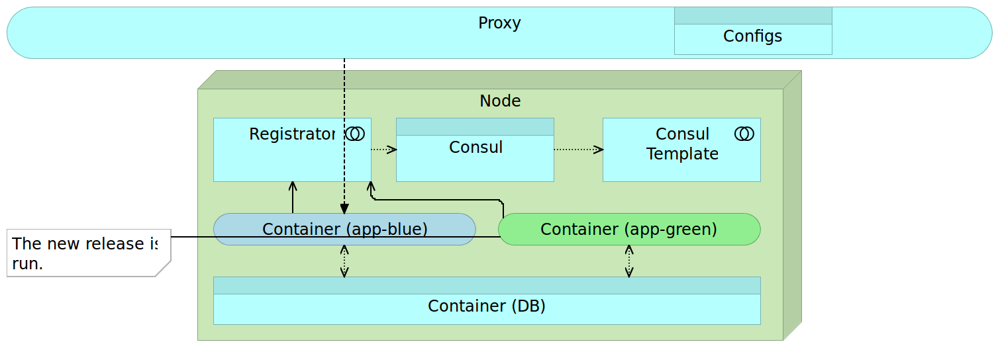
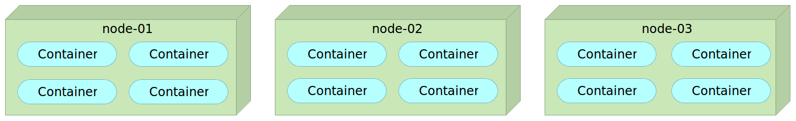

Scaling To Infinity
The Quest For Fully Automated, Scalable, Self-Healing System With Zero-Downtime
Viktor Farcic
@vfarcic
TechnologyConversations.com
CloudBees.com
Viktor Farcic


History of the Failed Initiatives
Customers
- Small greenfield projects
- Automotive industry
- Lotteries
- Banks
- Insurances
- Everything in between
History of the Failed Initiatives
Problems
- Integration phase = Dante's Infierno
- Testing
- eXtreme programming (XP)
- Continuous deployment
- Architecture
History of the Failed Initiatives
Each improvement
raises the bar
and converts itself into a failure
History of the Failed Initiatives
Today?
- Small specialized tools
- Immutable deployments
- Blue-green deployments
- Service discovery
- Domain-driven design
- Continuous delivery/deployment
- Scalable and fault tolerant systems
Why Scaling?
- Business
- Applications and services
- Teams
Things in Common
- Domain-driven design
- Continuous delivery/deployment
- Containers
- Small autonomous teams
- Scalable systems
Microservices
Monolithic applications
- Single unit
- Layers
- Time increases complexity and size
- Time decreases development, testing and deployment speed
- Change is hard and with risks
- Scaling = multiplication of the entire application
Monolithic applications
Early
Monolithic applications
Later

Monolithic applications
Scaling

Microservices
Applications that fit into a screen
- System composed of small services
- Autonomy/independence
- Data exchange through APIs
- Bounded context
Microservices
Self-Sufficiency

Microservices
Gartner
Microservices are simpler, developers get more productive and systems can be scaled quickly and precisely, rather than in large monolithic globs. And I haven’t even mentioned the potential for polyglot coding and data persistence.- Gary Olliffe
Microservices
Object-Oriented Design
The big idea is 'messaging'. The key in making great and growable systems is much more to design how its modules communicate rather than what their internal properties and behaviors should be.- Alan Kay
Microservices
Single Responsibility Principle
Gather together those things that change for the same reason, and separate those things that change for different reasons- Robert C. Martin
Microservices
Linux = Microservices
ps aux | grep jav[a] | awk '{print $2}' | xargs kill
Microservices
- One thing or one functionality
- Any tools or languages
- Truly loosely coupled
- Teams independence
- Easier testing and CD
- Decentralization
Microservices
Disadvantages
- Increased operational and deployment complexity
- Configuration Management
- Containers (Docker)
- Work shifted from development to DevOps
- Remote process calls
Microservices
Advantages
- Scaling
- Resilience / fault isolation
- Innovation
- Size
- Decoupling
- Deployment
- No need for long term commitment
Microservices
Best Practices
- Containers (Docker)
- Reverse proxy
- Minimalist approach
- CM is a must
- Cross functional teams
- API versioning
Continuous deployment
- Continuous integration
- Continuous delivery
- Continuous deployment
Containers (Docker)
Shipping container is an object for holding or transporting something

- Isolated
- Immutable
- Reliable
- Self-sufficient
- Scalable
Containers (Docker)
VMs vs Containers

Containers (Docker)
Self-sufficient container

Containers (Docker)
Container with the separate DB

Containers (Docker)
Containers with the shared DB

Deployment
- Big vs small
- Mutable vs immutable
Deployment
Mutable Monster Server

Deployment
Immutable Server

Deployment
Immutable Server

Deployment
Immutable Server

Deployment
Immutable Server

Deployment
Immutable Micro Services

Deployment
Immutable Micro Services

Deployment
Immutable Micro Services

Deployment
Immutable Micro Services

Configuration Management in the Docker World

|

|

|

|
Service Discovery
Service Discovery
Single node

Service Discovery
Multiple nodes

Service Discovery
Service Discovery Elements
- Service registry
- Service registration
- Service discovery
Service Discovery
Tools
- Manual configuration
- Zookeeper
- etcd / Registrator / confd
Service Discovery
Consul / Registrator / Consul Template

Proxy Service
Proxy Service
Configuring Proxy with Consul

Blue-Green Deployment

Blue-Green Deployment
Deploy Blue

Blue-Green Deployment
Integrate Blue
Blue-Green Deployment
Deploy Green
Blue-Green Deployment
Integrate Green

Blue-Green Deployment
Remove Blue

Blue-Green Deployment
Get the Current Color

Blue-Green Deployment
Put the Current Color

Blue-Green Deployment
The Flow

Clustering And Scaling Services

Clustering And Scaling Services
Tools
- Kubernetes
- Mesos DCOS
Self-Healing Systems
- Application level
- System level
- Hardware level
Self-Healing Systems
System Level: Time-To-Live (TTL)

Self-Healing Systems
System Level: Pings

Self-Healing Systems
Check Types
- Reactive
- Preventive
Self-Healing Systems
Consul Health Checks

Say Again
- over mutable deployments
- over big
- over manual procedures
- over predefined configuration
- over static
- over do-it-all tools
That is, while there is value in the items on the , we value the items on the more.
Viktor Farcic
@vfarcic